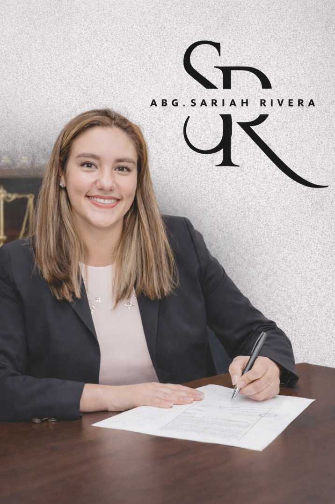

Confianza desde el primer contacto
Un trato respetuoso y una comunicación clara ayudan a que cada persona exponga su caso con mayor seguridad.
Atención clara, respuesta rápida y criterio jurídico para actuar con seguridad.
Atención legal
Cada consulta merece una atención que combine escucha, análisis y una ruta clara para actuar. Este despacho está orientado a brindar acompañamiento jurídico con orden, respeto y criterio.
Desde el primer contacto, la prioridad es que cada persona sepa a quién acudir, cómo exponer su situación y qué puede esperar de una asesoría responsable.

Abg. Sariah Rivera
Atención jurídica profesional orientada a escuchar, evaluar y actuar con seriedad.
Solicitar evaluación inicialUn trato respetuoso y una comunicación clara ayudan a que cada persona exponga su caso con mayor seguridad.
La información inicial permite comprender mejor la situación, el nivel de urgencia y la forma adecuada de responder.
La persona encuentra con rapidez los canales de contacto y puede saber cuál es el siguiente paso a seguir.
Cada consulta puede abordarse con seguimiento, criterio jurídico y una respuesta más consistente desde el inicio.
Análisis inicial, orientación estratégica y claridad sobre riesgos, opciones y siguientes pasos.
Solicitar asesoríaAcompañamiento profesional en procesos donde el cliente necesita respaldo formal y dirección jurídica.
Solicitar representaciónResolución de conflictos con enfoque práctico, negociación y búsqueda de acuerdos sostenibles.
Solicitar conciliaciónExpone su consulta, el nivel de urgencia y el medio de contacto que prefiere utilizar.
El caso se analiza de forma ordenada para valorar contexto, prioridad y forma de respuesta.
Según la necesidad del caso, se recomienda asesoría, representación o conciliación.
Si necesitas exponer tu situación y recibir una respuesta responsable, puedes iniciar tu consulta por formulario o revisar primero los servicios disponibles.